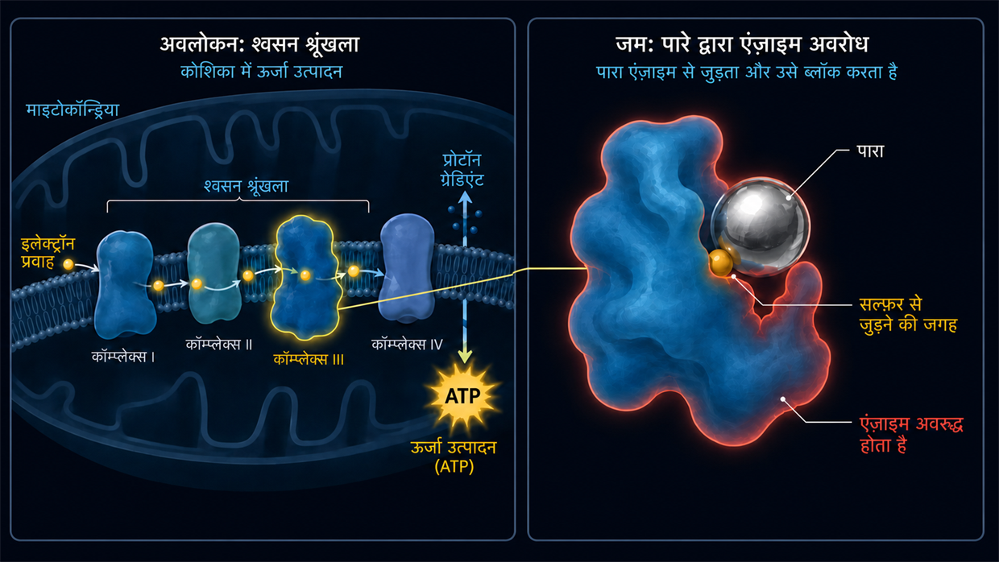

दवाओं और विषैले पदार्थों के कारण होने वाला टिनिटस (ओटोटॉक्सिसिटी)
अंतिम अपडेट: जून 2026
उस समय मैं भी बेहद तीव्र, नारकीय टिनिटस से पीड़ित था। मेरे मामले में उस समय टिनिटस केवल शोर के कारण हुआ था (और किसी अचानक दवा-संबंधी घटना से शुरू नहीं हुआ था), लेकिन लगातार बना रहने वाला वह टोन मेरी नसों, मेरी नींद और मेरे पूरे जीवन पर ठीक वही स्थायी हमला था। डॉक्टर अक्सर मुझसे भी कहते थे कि मुझे बस इसके साथ जीना सीखना होगा।
मैं रासायनिक कारणों पर यह लेख इसलिए लिख रहा हूँ, क्योंकि मेरे अपने शोध में इस विषय की महत्वपूर्ण भूमिका रही है। 2012 से मैं कोशिकीय जैवरसायन का गहन अध्ययन करता आया हूँ—जिसमें टॉक्सिकोलॉजी और पर्यावरणीय चिकित्सा का क्षेत्र भी शामिल है। और ठीक यहीं पूरी कड़ी जुड़ती है: पर्यावरणीय चिकित्सा विशेषज्ञों (जैसे Dr. Klinghardt या Dr. Mutter) की प्रैक्टिस में अक्सर एक रोचक घटना देखने को मिलती है। जब टिनिटस के रोगियों में विषैले पदार्थों या भारी धातुओं का छिपा हुआ भार एक प्रमुख कारक के रूप में मौजूद होता है, तब लक्षित, कोशिकीय डिटॉक्सिफ़िकेशन अक्सर कानों में सुनाई देने वाली आवाज़ों से स्पष्ट या महसूस होने योग्य राहत दिला सकता है। मैं यहाँ इस शोध से मिली अपनी समझ साझा कर रहा हूँ—और यही समाधान के उन तरीकों का आधार है, जिन पर हम इन शोधों के आधार पर आगे इस वेबसाइट पर चर्चा करेंगे।
भीतर से होने वाला रासायनिक हमला
जब हम टिनिटस के बारे में सोचते हैं, तो हमारे मन में आम तौर पर तुरंत दो तस्वीरें आती हैं: गूँजता हुआ कॉन्सर्ट (शोर) या अत्यधिक तनाव अथवा भीतरी ट्रॉमा-तनाव (मनोदैहिकता)। लेकिन एक तीसरा कारण भी है, जो न यांत्रिक है, न भावनात्मक, बल्कि पूरी तरह रासायनिक है: दवाओं या विषैले पदार्थों के कारण होने वाला टिनिटस। मेरी राय में टिनिटस का यह प्रकार सबसे कम पाए जाने वाले प्रकारों में से एक है—लेकिन पूर्णता के लिए मैं इस तीसरे कारण पर भी अपना दृष्टिकोण बताना चाहता हूँ। तकनीकी भाषा में इसे ओटोटॉक्सिसिटी कहते हैं (अर्थात “कान के लिए विषाक्तता”)।
पहली नज़र में यह शायद अमूर्त लगे, लेकिन हमारा भीतरी कान कुछ रासायनिक पदार्थों के प्रति बेहद संवेदनशील होता है। कुछ दवाएँ या पर्यावरणीय विषैले पदार्थ रक्तप्रवाह के ज़रिए सीधे भीतरी कान तक पहुँच सकते हैं और वहाँ संवेदनशील हेयर सेल्स या श्रवण तंत्रिका को उत्तेजित कर सकते हैं अथवा उन्हें नुकसान भी पहुँचा सकते हैं।
तंत्र: रसायन टोन कैसे पैदा करता है
आइए संवेदी बालों की नोक पर मौजूद उस आयन चैनल को याद करें, जो अधिक भार पड़ने के बाद स्थायी रूप से बहुत ज़्यादा खुला रहता है और फिर ठीक तरह से बंद नहीं होता—जैसा कि शोर के कारण होने वाले टिनिटस वाले मेरे उपपृष्ठ पर पहले ही समझाया गया है। शोर से हुए आघात में ध्वनि-तरंगों का यांत्रिक बल बारीक संवेदी बालों की ज्यामितीय स्थिति बदल देता है।
दवाओं या विषैले पदार्थों के कारण होने वाले टिनिटस में अंततः अक्सर बहुत कुछ ऐसा ही होता है, बस वहाँ तक पहुँचने का रास्ता अलग होता है। मूल रूप से कान की हर एक हेयर सेल की कल्पना एक छोटी जैविक बैटरी की तरह करनी चाहिए। वह ऊर्जा (ATP), खनिजों और विद्युत वोल्टेज के बेहद सूक्ष्म संतुलन को बनाए रखती है।
पर्यावरणीय विषैले पदार्थ या दवाओं की विषाक्त खुराक इस सूक्ष्म संतुलन को बिगाड़ सकते हैं, क्योंकि वे कोशिका के ऊर्जा संयंत्रों—तकनीकी भाषा में माइटोकॉन्ड्रिया—की कार्यक्षमता को गंभीर रूप से बाधित कर सकते हैं। कोशिकीय स्तर पर, जैवरसायन की मेरी समझ के अनुसार, फिर यह होता है:
चूँकि माइटोकॉन्ड्रिया कोशिका को ऊर्जा देने के लिए अनिवार्य हैं, परिणामस्वरूप कोशिका का ऊर्जा-स्तर—यानी उसका ATP-स्तर—गिर जाता है। इससे कोशिका की दीवार में मौजूद सूक्ष्म पंप, जो अपना काम करने के लिए लगातार ATP—यानी कोशिकीय ऊर्जा—खर्च करते हैं, रासायनिक संतुलन बनाए रखने के लिए बस ज़रूरी गति से काम नहीं कर पाते। इसके परिणामस्वरूप कोशिका के भीतरी भाग में कैल्शियम जमा हो जाता है। चूँकि जीवविज्ञान में कैल्शियम संकेत-संचरण का सीधा ट्रिगर है, आयनों की यह अधिकता कोशिका को लगातार और अनियंत्रित ढंग से “गलत संकेत” दागने के लिए मजबूर करती है। मेरे लिए यह कोई रहस्यमय संयोग नहीं, बल्कि एक तार्किक जैवरासायनिक स्वचालित प्रक्रिया है। मस्तिष्क लगातार होने वाली इस विद्युत फ़ायरिंग को आवाज़ के रूप में ग्रहण करता है।
आप उस दौरान ठीक कौन-सा टोन सुनते हैं—चाहे ऊँची सीटी हो, फुफकार जैसी आवाज़ हो या गहरी गूँज—यह आम तौर पर बस इस पर निर्भर करता है कि प्रभावित हेयर सेल्स कॉक्लिया (कर्णावर्त) में ठीक किस जगह स्थित हैं। उस क्षण कान आम तौर पर भौतिक रूप से नष्ट नहीं होता, लेकिन उसकी सूक्ष्म भीतरी व्यवस्था लय से बाहर हो जाती है।
विद्युत शॉर्ट सर्किट (श्रवण तंत्रिका)
खतरे में केवल हेयर सेल्स ही नहीं, बल्कि “बिजली की केबल” स्वयं—श्रवण तंत्रिका—भी है। इस तंत्रिका के चारों ओर एक सुरक्षात्मक आवरण होता है, माइलिन। यह इन्सुलेटिंग परत वसा और खनिजों से बेहद समृद्ध होती है और इसलिए रक्त में घूम रहे विषैले पदार्थों के प्रति विशेष रूप से संवेदनशील होती है। यदि यह आवरण रासायनिक तनाव से कमज़ोर या “पतला” हो जाए, तो तंत्रिका संकेतों को साफ़ ढंग से आगे नहीं पहुँचाती। वास्तविक विद्युत “शॉर्ट सर्किट” बनते हैं।
और यहीं हमारी शारीरिक रचना का बिल्कुल सीधा तर्क सामने आता है: हमारी श्रवण तंत्रिका कोई साधारण एकल तार नहीं, बल्कि हज़ारों सूक्ष्म तंत्रिका-तंतुओं का एक मोटा गुच्छा है। इनमें से हर एक तंतु एक बिल्कुल निश्चित टोन की ऊँचाई को आगे पहुँचाने के लिए ज़िम्मेदार है। यदि विषाक्त शॉर्ट सर्किट (माइलिन का क्षय) ठीक उस तंत्रिका-तंतु में बनता है जो ऊँची फ़्रीक्वेंसी के लिए ज़िम्मेदार है, तो आपका मस्तिष्क तार्किक रूप से ऊँची सीटी दर्ज करता है। यदि गहरे टोन के लिए ज़िम्मेदार किसी तंतु पर असर पड़ा है, तो आपको गहरी गूँज सुनाई देती है। इसलिए आप जो सरसराहट, फुफकार या सीटी सुनते हैं, वह बिल्कुल संयोग नहीं है—यह मुख्य रूप से इस बात पर निर्भर करता है कि मुख्य केबल में ठीक किस सूक्ष्म जगह का इन्सुलेशन क्षतिग्रस्त हुआ है।
टिनिटस का सार्वभौमिक नियम
जब पहेली के इन सभी टुकड़ों को एक साथ जोड़ा जाता है, तो एक केंद्रीय साझा सूत्र उभरकर सामने आता है: मेरे सबसे गहरे विश्वास और अनुभव के अनुसार टिनिटस अंततः लंबे समय से उत्तेजित और अति-उत्तेजित श्रवण-प्रसंस्करण तंत्रिकाओं का परिणाम है। भौतिक दृष्टि से यह लगभग मायने नहीं रखता कि इस अति-उत्तेजना की शुरुआती गोली ठीक कहाँ चलती है:
- चाहे हेयर सेल्स (शोर या दवाओं के कारण) आपात मोड में फँसी रहें और श्रवण तंत्रिका को लगातार ग्लूटामेट से सराबोर करती रहें…
- चाहे पर्यावरणीय विषैले पदार्थ और भारी धातुएँ तंत्रिकाओं के इन्सुलेशन (माइलिन) पर हमला करके वहीं सीधे शॉर्ट सर्किट पैदा करें…
- या फिर मस्तिष्क में भारी, क्रॉनिक मनोदैहिक तनाव जमा हो और श्रवण-प्रसंस्करण केंद्रों को मानो “ऊपर से” लगातार करंट में रख दे…
जब इस सार्वभौमिक तर्क को एक बार समझ लिया जाता है, तो टिनिटस अक्सर अपना रहस्यमय भय पूरी तरह खो देता है।
अंतिम परिणाम, मेरे अनुभव में, लगभग हमेशा बिल्कुल एक ही होता है: इस क्षेत्र का तंत्रिका तंत्र लंबे समय से उत्तेजित रहता है और विद्युत SOS-संकेतों की लगातार गोलाबारी करता रहता है। जब इस सार्वभौमिक तर्क को एक बार समझ लिया जाता है, तो टिनिटस अक्सर अपना रहस्यमय भय पूरी तरह खो देता है—और समाधान का रास्ता अचानक एकदम साफ़ हो जाता है।
आम ट्रिगर (ओटोटॉक्सिक पदार्थ)
लेकिन ठीक है, अब आगे बढ़ते हैं: ऐसे बहुत-से पदार्थ हैं, जिनके बारे में जाना जाता है कि वे संभावित रूप से ओटोटॉक्सिक असर डाल सकते हैं। (महत्वपूर्ण: यह स्व-निदान के लिए कोई चिकित्सीय सूची नहीं है, बल्कि केवल सामान्य समझ के लिए है!)
1. दवाएँ
कुछ दवाएँ भीतरी कान को अति-उत्तेजित कर सकती हैं। मगर केवल उनके नाम जान लेना पर्याप्त नहीं है—यह समझना होगा कि वे सिस्टम को पटरी से क्यों उतार देती हैं। क्षति की कार्यप्रणाली समझने पर ही हमारा आगे का तरीका (कोशिकीय ऊर्जा और डिटॉक्सिफ़िकेशन) कोई अर्थ रखता है। सबसे प्रसिद्ध समूहों में ये शामिल हैं:
ऊँची खुराक वाली दर्दनिवारक दवाएँ (विशेष रूप से Aspirin/ASS)
पहले थोड़ी तसल्ली की बात: सिरदर्द की एक सामान्य गोली आम तौर पर टिनिटस पैदा नहीं करती। शोध के अनुसार यहाँ अक्सर खुराक का एक सख़्त विरोधाभास होता है। यह आम तौर पर तभी खतरनाक बनता है, जब खुराक वास्तव में विषैली और बहुत ऊँची हो (अक्सर दिन में कई ग्राम)। ऐसा होने पर फ़ार्माकोलॉजिकल मॉडल संकेत देते हैं कि दवा भीतरी कान में तीन चरणों वाली शृंखलाबद्ध प्रतिक्रिया शुरू करती है:
- मोटर हकलाने लगती है: माना जाता है कि सक्रिय पदार्थ प्रेस्टिन को अवरुद्ध करता है—यह एक सूक्ष्म प्रोटीन है, जो बाहरी हेयर सेल्स में मोटर की तरह काम करता है। इससे कान का ध्वनिक एम्प्लीफ़ायर ढह जाता है। घबराहट की प्रतिक्रिया के रूप में मस्तिष्क अक्सर अपने केंद्रीय “वॉल्यूम नियंत्रक” यानी सेंट्रल गेन (Central Gain) को अधिकतम स्तर तक बढ़ा देता है, ताकि कुछ भी सुन पाना संभव हो सके।
- तंत्रिकाओं की अति-संवेदनशीलता: साथ ही मॉडल संकेत देते हैं कि दवा श्रवण तंत्रिका के रिसेप्टर्स को अधिक उत्तेजनीय अवस्था में पहुँचा देती है। उत्तेजना की सीमा घट जाती है, जिससे तंत्रिका तंत्र बहुत छोटे संकेतों पर भी स्पष्ट रूप से अधिक संवेदनशील प्रतिक्रिया करने लगता है।
- बिजली गुल होना (इग्निशन): जैवरासायनिक शोध के अनुसार Aspirin ऊँची खुराक में माइटोकॉन्ड्रिया के भीतर “अनकप्लर” की तरह काम करता है। रूपक में कहें तो यह कोशिका की बिजली का प्लग खींच देता है (ATP की कमी)। और ठीक यहीं शोर से लगी चोट के मुकाबले रोचक, तार्किक अंतर है: शोर में यांत्रिक बल कोशिका के सूक्ष्म बालों को सचमुच मोड़ देता है। इससे कैल्शियम चैनल किसी अटके हुए दरवाज़े की तरह स्थायी रूप से खुला रहता है और कैल्शियम बेरोकटोक भीतर बहता है। Aspirin की ओवरडोज़ में ऐसा नहीं होता। बाल अपनी जगह पर पूरी तरह सही-सलामत खड़े रहते हैं। यहाँ “केवल” रासायनिक संतुलन बिगड़ा है। सामान्य से अधिक कैल्शियम भीतर आता ही नहीं—लेकिन ऊर्जा में तेज़ गिरावट के कारण कोशिका के सूक्ष्म कैल्शियम पंप उसे फिर बाहर निकालने की रफ़्तार नहीं पकड़ पाते। उस पल कोशिका कैल्शियम की सामान्य मात्रा से भी पूरी तरह अभिभूत हो जाती है। अंतिम परिणाम वही होता है: कैल्शियम भीतर जमा होता है और कोशिका को संदेशवाहक ग्लूटामेट का बिना रुके स्राव करने पर मजबूर करता है।
टिनिटस का संभावित परिणाम: ग्लूटामेट की यह अनियंत्रित बाढ़ उन तंत्रिकाओं से टकराती है, जिनकी उत्तेजना-सीमा पहले ही घट चुकी है (चरण 2), और फिर ऐसे मस्तिष्क को भेजी जाती है, जिसका वॉल्यूम नियंत्रक अपनी अंतिम सीमा पर है (चरण 1)। कान फाड़ देने वाली लगातार गोलाबारी पैदा होती है। और ठीक यही सरल कोशिकीय तर्क रोज़मर्रा की उस घटना को भी समझाता है, जिसका ठोस जवाब अक्सर बहुत-से डॉक्टरों के पास भी नहीं होता: जिस अंकल ने एक सप्ताह तक Aspirin की भारी ओवरडोज़ ली थी, दवा बंद करने के बाद उनका कान अक्सर थोड़े ही समय में फिर शांत क्यों हो जाता है—जबकि उनका 26 वर्षीय भतीजा, जो सिर्फ़ दो बार किसी तेज़ आवाज़ वाली डिस्को में गया था, चार महीनों से ऐसे टिनिटस से पीड़ित है, जो जा ही नहीं रहा? मेरे लिए इसका जवाब एकदम साफ़ है: अंकल के मामले में जैवरासायनिक बिजली गुल हुई थी और उसके साथ श्रवण तंत्रिका की अति-संवेदनशीलता थी। जैसे ही डॉक्टर से सलाह करके दवा बंद की जाती है और शरीर उसे बाहर निकाल देता है, कोशिका के ऊर्जा संयंत्र फिर अपने सामान्य शारीरिक मोड में काम कर सकते हैं। इससे पंपों को फिर ज़रूरी ऊर्जा मिलती है, ताकि वे अतिरिक्त कैल्शियम को हटा सकें और सिस्टम फिर बिना किसी त्रुटि के काम कर सके। इसके विपरीत, डिस्को वाले भतीजे पर ज़बरदस्त यांत्रिक बल लगा था। मेरी रिसर्च और समझ के अनुसार उसके सूक्ष्म बाल इसके बाद बदली हुई ज्यामितीय स्थिति में हैं: कुछ अधिक और कुछ कम झुके हुए हैं। इससे आयन चैनल स्थायी रूप से और अधिक खुले रहते हैं, इसलिए ऊर्जा की आपूर्ति समान रहने पर भी कोशिका में शारीरिक रूप से अपेक्षित मात्रा से अधिक कैल्शियम प्रवेश करता है। यह ऐसा है, मानो किसी दरवाज़े के कब्ज़े को ज़बरदस्त बल से मोड़ दिया गया हो। और तार्किक रूप से यह क्षति सिर्फ़ इसलिए एक सप्ताहांत में अपने-आप ठीक नहीं हो जाती कि शोर समाप्त हो चुका है—इस बारे में अधिक जानकारी आपको शोर के कारण होने वाले टिनिटस पर मेरे उपपृष्ठ पर मिलेगी।
कुछ एंटीबायोटिक्स (अमीनोग्लाइकोसाइड्स)
इन शक्तिशाली एंटीबायोटिक्स का इस्तेमाल आम तौर पर केवल गंभीर बैक्टीरियल संक्रमणों के लिए अस्पताल में किया जाता है (जैसे जेंटामाइसिन)। इनमें एक बेहद कपटी गुण होता है: ये अक्सर खास तौर पर भीतरी कान के द्रव में जमा हो जाते हैं और वहाँ उनका टूटना बेहद कष्टदायक रूप से धीमा होता है—ये वहाँ कई सप्ताह या कई महीने बने रह सकते हैं। वहाँ ये शरीर में मौजूद आयरन के साथ अभिक्रिया करके फ़्री रैडिकल्स (ROS) का बहुत बड़ा विस्फोट पैदा करते हैं। यह एक जैवरासायनिक दावानल जैसा है, जो संवेदनशील कोशिका झिल्लियों और बालों के भीतरी एक्टिन-ढाँचे पर हमला करता है। यहाँ दो परिणामों वाला एक सरल जैविक तर्क काम करता है:
- परिणाम 1 (कोशिका की मृत्यु): यदि उस समय शरीर वैसे ही कमज़ोर हो, उसके पास पोषक तत्त्वों के भंडार बहुत कम हों या पहले से क्षति मौजूद हो, तो कोशिका इस रासायनिक दावानल के नीचे पूरी तरह ढह जाती है और मर जाती है (एपोप्टोसिस)। विरोधाभासी परिणाम: इस स्थिति में आम तौर पर टिनिटस पैदा नहीं होता। मृत कोशिका अब कोई संकेत नहीं भेजती। इसके बजाय ठीक उसी फ़्रीक्वेंसी में केवल मूक श्रवण-हानि (बहरापन) पैदा होती है।
- परिणाम 2 (जीवित रहने की लड़ाई = टिनिटस): कोशिका इस हमले से बस किसी तरह बच जाती है, लेकिन उसकी संरचना बड़े पैमाने पर क्षतिग्रस्त रहती है। मूल रूप से यह बिल्कुल शोर से लगी चोट जैसा है, बस इसका कारण पूरी तरह रासायनिक है। कठोर भीतरी कंकाल (एक्टिन) ढह जाता है, जिससे बाल सचमुच पानी के बिना फूलों की तरह मुरझा जाते हैं। लेकिन कोशिका अभी जीवित है! और जीवित होने के कारण वह छिद्रदार झिल्ली से भीतर आते कैल्शियम से लड़ने की बेताब कोशिश करती है। चूँकि आयनों का यह प्रवाह उत्तेजना को आगे भेजने का सीधा रासायनिक आदेश है, इसलिए बुरी तरह क्षतिग्रस्त कोशिका लगातार बने रहने वाले पैनिक मोड में संदेशवाहक ग्लूटामेट को श्रवण तंत्रिका की ओर बिना रुके दागने पर मजबूर हो जाती है। कोशिका के जीवित रहने की यह लड़ाई विद्युत संकेतों की लगातार गोलाबारी बन जाती है—और ठीक इसी को आप टिनिटस के रूप में महसूस करते हैं।
डाययूरेटिक्स (तेज़ असर वाली पानी की गोलियाँ)
तथाकथित लूप डाययूरेटिक्स शरीर से केवल पानी ही नहीं निकालते, बल्कि पोटैशियम और सोडियम जैसे इलेक्ट्रोलाइट्स को भी भारी मात्रा में बहाकर बाहर निकाल देते हैं। समस्या? भीतरी कान का अपना एक छोटा वोल्टेज-स्रोत होता है—स्ट्रिया वैस्क्युलारिस। यह ऊतक-परत कान के द्रव में बिना रुके पोटैशियम पंप करती है, ताकि वहाँ लगातार एक समान विद्युत वोल्टेज बना रहे—यही वह बैटरी है, जिससे हेयर सेल्स सुनने के लिए अपना करंट लेते हैं। पानी की गोलियाँ ठीक इसी जैवरासायनिक पंप-तंत्र को अवरुद्ध करती हैं। इसके परिणामस्वरूप कान का विद्युत वोल्टेज भारी रूप से गिर जाता है। जैविक बैटरी अचानक “खाली” हो जाती है और श्रवण तंत्र एक अव्यवस्थित अलार्म-अवस्था में चला जाता है, जो सरसराहट या सीटी के रूप में फूटती है।
कीमोथेरेपी की दवाएँ (जैसे सिस्प्लैटिन)
कैंसर की ये आक्रामक दवाएँ अक्सर प्लैटिनम (एक भारी धातु) पर आधारित होती हैं। इन्हें कोशिकाओं के DNA में हस्तक्षेप करने के लिए प्रोग्राम किया गया है। लेकिन यदि इस दवा के कारण टिनिटस की स्थिति पैदा होती है, तो फ़ार्माकोलॉजिकल मॉडलों के अनुसार इसका कारण भीतरी कान में लगा वास्तविक जैवरासायनिक दावानल है: इस स्थिति में सिस्प्लैटिन कोशिका से उसके सबसे महत्वपूर्ण, शरीर में ही बनने वाले सुरक्षा-पदार्थ (ग्लूटाथियोन) को पूरी तरह छीन लेता है। इस सुरक्षा-कवच के बिना फ़्री रैडिकल्स कोशिका झिल्ली में सूक्ष्म छेद कुतर देते हैं और आयन पंपों को नष्ट कर देते हैं। परिणाम आयनों का चरम असंतुलन है: कैल्शियम की बाढ़ कोशिका में भर जाती है और उसे ग्लूटामेट की लगातार गोलाबारी करने पर मजबूर करती है। साथ ही सिस्प्लैटिन बहुत अधिक न्यूरोटॉक्सिक है और श्रवण तंत्रिका की माइलिन परत (इन्सुलेशन) को सचमुच विघटित कर देता है। जब क्षतिग्रस्त कोशिका की लगातार गोलाबारी किसी असुरक्षित, खुली पड़ी तंत्रिका से टकराती है, तो मस्तिष्क तक जाने वाले मुख्य केबल पर सीधे वास्तविक, मापे जा सकने वाले शॉर्ट सर्किट और गलत फ़ायरिंग पैदा होती हैं। यहाँ भी टिनिटस का जैविक दोराहा लागू होता है: यदि कोशिका पूरी तरह नष्ट हो जाती है (एपोप्टोसिस), तो आम तौर पर खामोशी (बहरापन) पैदा होती है। यदि वह रिसती झिल्लियों और खुली पड़ी तंत्रिकाओं वाले बुरी तरह क्षतिग्रस्त खंडहर के रूप में बच जाती है, तो वह अक्सर लगातार बना रहने वाला बाधाकारी संकेत दागती है। यह बताता है कि कीमो-टिनिटस अक्सर बेहद ज़िद्दी क्यों होता है।
क्विनीन (मलेरिया की दवा और मांसपेशियों की ऐंठन-रोधी दवाएँ)
क्विनीन का रक्तवाहिकाओं को बहुत अधिक संकरा करने वाला प्रभाव होता है। भीतरी कान शरीर-रचना की दृष्टि से एक पूरी तरह बंद अंतिम सिरा है—उसे केवल एक ही बेहद सूक्ष्म धमनी (Arteria labyrinthi) से रक्त मिलता है। वहाँ कोई “वैकल्पिक रास्ते” नहीं हैं। जब क्विनीन इस सूक्ष्म धमनी को संकरा करती है और साथ ही लाल रक्त कोशिकाओं को कम लचीला बना देती है, तो रक्त प्रवाह रुक-रुककर चलने लगता है। इसके बाद हेयर सेल्स को अनिवार्य ऑक्सीजन और पोषक तत्त्वों की आपूर्ति से काट दिया जाता है। उनका दम बुरी तरह घुटने लगता है और वे तुरंत टिनिटस-पैनिक मोड में चली जाती हैं।
2. भारी धातुएँ और पर्यावरणीय विषैले पदार्थ
पारा, सीसा, एल्युमिनियम या कैडमियम आदि जैसी भारी धातुएँ कोशिकीय स्तर पर बेहद आक्रामक तोड़फोड़ करने वालों की तरह काम करती हैं। जो कोई गहन डिटॉक्सिफ़िकेशन प्रोटोकॉल पर काम करता है, वह जानता है: ये धातुएँ भीतरी कान की कोशिकाओं को सिर्फ़ बेतरतीब ढंग से विषाक्त नहीं करतीं, बल्कि जैविक प्रक्रियाओं में ठीक भीतर तक घुसकर उन्हें ब्लॉक कर देती हैं। कॉक्लिया और श्रवण तंत्रिका में यह चार बेहद विनाशकारी तंत्रों के ज़रिए होता है:
- 01ट्रोजन हॉर्स
- 02थायोल हैक
- 03ध्वंस-गोला
- 04माइलिन-श्रेडर
तंत्र 1: ट्रोजन हॉर्स (सूक्ष्म तत्त्वों का विस्थापन)
कैडमियम, पारा आदि धातुएँ रासायनिक रूप से अक्सर जीवन के लिए आवश्यक सूक्ष्म तत्त्वों—खासकर ज़िंक और सेलेनियम—से आश्चर्यजनक समानता रखती हैं। शरीर धोखा खा जाता है और प्रोटीनों में ज़िंक की जगह भारी धातु को समाहित कर देता है। नतीजा घातक है: श्रवण तंत्रिका के रिसेप्टर्स पर ज़िंक एक तरह की प्राकृतिक “ब्रेक” का काम करता है। यह सुनिश्चित करता है कि हर छोटे-से-छोटे उत्तेजक संकेत पर तंत्रिका तुरंत अति-प्रतिक्रिया न करे। जब कोई भारी धातु इस ज़िंक को विस्थापित कर देती है, तो यह ब्रेक पूरी तरह नाकाम हो जाता है। ध्वनिक संकेत बिना किसी रोक के तंत्रिका तंत्र में टकराते हैं, जो मेरे अनुभव में कान फाड़ देने वाले टिनिटस के रूप में प्रकट होता है। साथ ही, सेलेनियम का विस्थापन शरीर के अपने सबसे महत्वपूर्ण एंटीऑक्सीडेंट (ग्लूटाथियोन) के उत्पादन को भारी रूप से बाधित करता है। कोशिका की सुरक्षा के ढह जाने का खतरा पैदा हो जाता है।
तंत्र 2: थायोल हैक (प्रोटीनों को मोड़ना)

इसके अलावा भारी धातुओं का सल्फ़र के प्रति बहुत प्रबल रासायनिक आकर्षण होता है। हमारे अधिकतर एंज़ाइमों और सूक्ष्म कोशिका-पंपों (जैसे ATP-नियंत्रित कैल्शियम पंपों) में सल्फ़र-युक्त संयोजन-स्थल होते हैं, जिन्हें थायोल समूह (-SH) कहा जाता है। जब भारी धातु भीतरी कान में पहुँचती है, तो वह तुरंत इन सल्फ़र समूहों से जुड़ जाती है। जिस क्षण धातु एंज़ाइम से जुड़ती है, वह प्रोटीन को अपनी 3D संरचना बदलने पर मजबूर कर देती है—वह सचमुच मुड़ जाता है। इससे हेयर सेल का कैल्शियम पंप ब्लॉक हो जाता है और काम करना बंद कर देता है।
तंत्र 3: जैविक ध्वंस-गोला (कोशिका का सीधा विनाश)
पंपों की तोड़फोड़ के अलावा धातुएँ कोशिका के हार्डवेयर पर भी सीधे और भौतिक रूप से हमला करती हैं। सीसा और कैडमियम माइटोकॉन्ड्रिया (कोशिका के ऊर्जा संयंत्रों) में प्रवेश करते हैं, कोशिकीय श्वसन शृंखला में जम जाते हैं और ATP का उत्पादन बुरी तरह दबा देते हैं। रूपक में कहें तो कोशिका का भीतर से दम घुटने का खतरा पैदा हो जाता है। साथ ही, धातुएँ कान में फ़्री रैडिकल्स का विस्फोट पैदा करती हैं, जो हेयर सेल के वसा-युक्त सुरक्षात्मक आवरण (झिल्ली) को सचमुच ऑक्सीडाइज़ कर देते हैं—वह बासी हो जाती है, पिघलती है और उसमें छेद हो जाते हैं (लिपिड पेरॉक्सिडेशन)। विषाक्त कैल्शियम टूटे बाँध से बहते पानी की तरह अंदर आता है। इसके अलावा धातुएँ सूक्ष्म संवेदी बालों के भीतर मौजूद कठोर प्रोटीन-ढाँचे (एक्टिन) पर हमला करती हैं। आणविक पुल टूट जाते हैं, बाल मुरझाते हैं, मुड़ जाते हैं और उत्तेजना चैनलों को स्थायी रूप से खुली अवस्था में अटका देते हैं।
तंत्र 4: माइलिन-श्रेडर (मुख्य केबल पर हमला)
भारी धातुएँ सीधे केबल—यानी श्रवण तंत्रिका—में भी धँसती हैं और उसकी इन्सुलेटिंग परत, माइलिन, को नष्ट करती हैं। यह परत लगभग 80% वसा से बनी होती है, इसलिए ऑक्सीडेटिव स्ट्रेस का बिल्कुल सही शिकार बनती है। फ़्री रैडिकल्स वसा को मानो गलाकर हटा देते हैं। उदाहरण के लिए पारा “Myelin Basic Protein” से जुड़ता है, जो इन्सुलेटिंग परत का आणविक गोंद है, और इससे यह परत उखड़ने लगती है। टॉक्सिकोलॉजी में इस बात का प्रबल संदेह है कि सीसा इससे एक कदम आगे जाकर तथाकथित श्वान कोशिकाओं को लक्षित ढंग से नुकसान पहुँचाता है—ये वे सूक्ष्म निर्माणकर्मी हैं जिन्हें असल में माइलिन की मरम्मत करनी होती है। इन्सुलेशन के बिना सुनने के विद्युत संकेत बहुत धीमे हो जाते हैं, पास मौजूद बिना आवरण वाले तंत्रिका-तंतुओं पर छलाँग लगाते हैं (क्रॉस-टॉक) और भारी गलत फ़ायरिंग पैदा करते हैं।
-
01रासायनिक प्रवेश
विषाक्त स्तर की ऊँची खुराक वाली दवा या कोई भारी धातु/पर्यावरणीय विषैला पदार्थ रक्तप्रवाह के रास्ते भीतरी कान तक पहुँचता है।
-
02संतुलन बिगड़ता है
ATP घटता है, पंप काम की रफ़्तार नहीं पकड़ पाते, कोशिका के भीतर कैल्शियम जमा होता है और माइलिन पतला पड़ता है।
-
03लगातार गलत संकेत
कमज़ोर कोशिका लगातार ग्लूटामेट दागती है या संकेत पड़ोसी तंतुओं पर छलाँग लगाते हैं—मस्तिष्क इसे टोन के रूप में ग्रहण करता है।
लेकिन फिर हर किसी को टिनिटस क्यों नहीं होता? (भारी-धातु लॉटरी और परफ़ेक्ट स्टॉर्म)
इस जगह एक तार्किक सवाल अपने-आप सामने आता है: अगर पारा (मछली या अमलगम से), सीसा (पुराने पाइपों से) आदि इतनी विनाशकारी तबाही मचाते हैं, तो टूना पिज़्ज़ा खाने के तुरंत बाद आधी मानवजाति को टिनिटस क्यों नहीं हो जाता? जवाब हमारे शरीर के अपने सुरक्षा-कवचों, एक असली जैविक लॉटरी—और इस तथ्य में है कि टिनिटस लगभग कभी भी किसी एक अकेले, पृथक कारक से नहीं होता।
1. टॉक्सिकोलॉजी की लॉटरी (स्थानीय कमज़ोर जगह):
भारी धातुओं में कान के लिए कोई अंतर्निहित GPS प्रणाली नहीं होती। वे रक्त में आँख बंद करके घूमती हैं और सबसे कम प्रतिरोध वाली जगह (Locus minoris resistentiae) खोजती हैं। वे कहाँ जमा होती हैं, यह अक्सर पूरी तरह संयोग होता है और इस पर निर्भर करता है कि आपके शरीर में उस समय कमज़ोर जगह कहाँ है। उदाहरण के लिए, अगर आप रात में बहुत ज़्यादा दाँत पीसते हैं या गर्दन–जबड़े के क्षेत्र में कोई मूक सूजन है, तो आपके कान के आसपास रक्तवाहिकीय पारगम्यता बेहद अधिक होती है। तथाकथित रक्त–लैबिरिंथ अवरोध, जिसे असल में कान की रक्षा करनी चाहिए, तब पूरी तरह खुला होता है। पारे को यह खुला दरवाज़ा मिल जाता है और वह ठीक वहीं श्रवण तंत्रिका पर जमा हो जाता है, जबकि किसी दूसरे व्यक्ति में शायद बस आगे बढ़ जाता है।
2. शरीर का अपना कचरा-भंडार, ग्लूटाथियोन सुरक्षा-कवच और शुरुआती डिपो:
एक स्वस्थ शरीर यकृत में भारी मात्रा में ग्लूटाथियोन बनाता है—एक ऐसा अणु, जो भारी धातुओं को हथकड़ी की तरह बाँधकर शरीर से बाहर निकाल देता है, इससे पहले कि वे कान तक पहुँचें। लेकिन यहीं शरीर में पहुँचने वाली मात्रा की कठोर वास्तविकता सामने आती है: कुछ लोग—अक्सर पूरी तरह अनजाने में—दूसरों की तुलना में भारी धातुओं के कहीं अधिक संपर्क में आते हैं। वजह दूषित हवा, मुँह में पुरानी अमलगम फ़िलिंग्स, कार्यस्थल, धूम्रपान, भारी धातुओं से दूषित खाद्य पदार्थ या दूषित रोज़मर्रा की वस्तुओं के साथ लगातार संपर्क हो सकती है। अंत में यह हमेशा शरीर में पहुँचने वाली कुल मात्रा और इन विषैले पदार्थों को बाँधकर बाहर निकालने की शरीर की अपनी क्षमता से बनी एक विषाक्त मिश्रित तस्वीर होती है। अगर शरीर ऐसा नहीं कर पाता, तो वह विषैले पदार्थों को रक्तप्रवाह से निकालने के लिए अक्सर कथित रूप से सुरक्षित “डिपो” (जैसे हड्डियों या सामान्य वसा-ऊतक) में जमा कर देता है। और ठीक यहीं हमारी सुनने की क्षमता के लिए एक घातक जैविक जाल छिपा है: हमारा तंत्रिका तंत्र—और खासकर श्रवण तंत्रिका की इन्सुलेटिंग माइलिन परत—लगभग 80% शुद्ध वसा से बने हैं। इसलिए जब शरीर लिपोफ़िलिक (वसा में घुलनशील) भारी धातुओं को वसा-ऊतक में “कुछ समय के लिए खड़ा” करने की बेताब कोशिश करता है, तो लॉटरी के दुर्भाग्यपूर्ण खेल में अक्सर ठीक यही बेहद संवेदनशील तंत्रिका-ऊतक या हेयर सेल्स के आसपास की संरचनाएँ इसकी चपेट में आ जाती हैं।
इसके साथ एक कठोर, अक्सर छिपाया गया जैविक तथ्य भी जुड़ता है: बहुत-से लोग जन्म के दिन ही भरे हुए डिपो के साथ इस विषाक्त लॉटरी में उतरते हैं। क्यों? क्योंकि अध्ययन संकेत देते हैं कि गर्भावस्था के दौरान माताएँ वर्षों में जमा हुए अपने भारी-धातु डिपो का एक हिस्सा प्लेसेंटा के रास्ते भ्रूण को स्थानांतरित करती हैं। इसलिए कुछ लोगों में कोशिकीय पीपा शुरुआत से ही काफ़ी ज़्यादा भरा होता है।
आखिरकार जब यह सुरक्षा-तंत्र बिगड़ता है, तो खतरा पैदा होता है: अत्यधिक तनाव, आनुवंशिकी या पोषक तत्त्वों की कमी के कारण डिटॉक्सिफ़िकेशन अचानक अपनी सीमा पर पहुँच जाता है। शरीर के अपने डिपो खुल जाते हैं या नया आने वाला विषैला पदार्थ शुरू में ही रोका नहीं जाता, रक्त में घूमता रहता है और—बताई गई लॉटरी की तरह—अनिवार्य रूप से शरीर की अपनी कमज़ोर जगह खोज लेता है।
3. घातक मिश्रित स्थिति (परफ़ेक्ट स्टॉर्म):
लेकिन जैविक वास्तविकता में हमें यहाँ अक्सर एक बेहद जटिल मिश्रित तस्वीर दिखाई देती है—और यह उस गलतफ़हमी को भी दूर करती है कि शोर की किसी घटना के बाद टिनिटस होने वाला हर व्यक्ति अपने-आप भारी धातुओं से पूरी तरह विषाक्त होना ही चाहिए। ऐसा नहीं है।
अक्सर इसके बजाय यह होता है: पर्यावरणीय विषैले पदार्थों या भारी धातुओं के कारण किसी व्यक्ति के हेयर सेल्स में, उनके माइटोकॉन्ड्रिया में या सीधे श्रवण तंत्रिका पर पहले से एक निश्चित बुनियादी विषाक्त भार मौजूद होता है। माइलिन की परत शायद पहले से थोड़ी पतली हो चुकी होती है, कैल्शियम पंप पहले ही अपनी सीमा के करीब काम कर रहे होते हैं या कोशिकाएँ अपनी सीमा पर कड़ी मेहनत कर रही होती हैं। अकेले इससे अक्सर कोई स्थायी टिनिटस पैदा नहीं होता। आपका शरीर इसे सँभालता रहता है और जैसे-तैसे रस्सी पर संतुलन बनाए रखता है।
लेकिन फिर जीवन का मेल सामने आता है: आप अत्यधिक क्रॉनिक तनाव के दौर में फिसल जाते हैं। तनाव हार्मोन (एड्रेनालिन/कॉर्टिसोल) रक्तवाहिकाओं को संकरा करते हैं, कान में रक्तप्रवाह को बहुत कम कर देते हैं और आपसे मरम्मत करने वाली नींद छीन लेते हैं। तंत्र रात में फिर से ठीक नहीं हो पाता। अगर इसी बेहद असुरक्षित अवस्था में आप शोर की किसी घटना के संपर्क में भी आ जाते हैं (चाहे अचानक बहुत तेज़ शोर का झटका हो या लगातार क्रॉनिक ध्वनि-भार), तो इस शृंखला में कहीं तंत्र आखिरकार पूरी तरह बिगड़ जाता है। पहले से क्षतिग्रस्त हार्डवेयर इस यांत्रिक प्रहार को अब सह नहीं पाता। आयन-संतुलन टूट जाता है, एक्टिन-ढाँचा ढह जाता है या माइलिन की परत आखिरकार विफल हो जाती है—और लगातार विद्युत संकेत पैदा हो सकते हैं।
मेरी नज़र में यह घातक मेल है: विषैला पदार्थ हार्डवेयर को धीरे-धीरे कमज़ोर करता है, तनाव ऑक्सीजन की आपूर्ति काट देता है और फिर शोर अक्सर बस वह आखिरी बूँद होता है, जो पहले से लबालब भरे कोशिकीय पीपे को छलका देती है।
मेरी राय में स्पेक्ट्रम के दूसरे छोर पर, बेशक, ऐसा टिनिटस भी होता है जो केवल विषाक्त दवाओं या भारी धातुओं की गंभीर विषाक्तता के कारण पैदा होता है। अगर रासायनिक खुराक पर्याप्त ऊँची हो (जैसे आक्रामक कीमोथेरेपी या तीव्र विषाक्तता में), तो “परफ़ेक्ट स्टॉर्म” की बिल्कुल ज़रूरत नहीं होती, न ही शोर की किसी अतिरिक्त घटना की। इन मामलों में विषैला पदार्थ अकेला ही कोशिका के ऊर्जा संयंत्रों को ठप करने या तंत्रिकाओं को नुकसान पहुँचाने के लिए पूरी तरह काफ़ी होता है।
विषैले पदार्थों के कारण होने वाला टिनिटस (भारी धातुएँ और कीटनाशक) अक्सर इतना ज़िद्दी क्यों होता है
जो शोर से बचता है, वह कारण को तुरंत रोक देता है। विषैले पदार्थों के कारण होने वाले टिनिटस में—और यहाँ मेरा मतलब खास तौर पर वास्तविक पर्यावरणीय विषैले पदार्थों, कीटनाशकों या भारी धातुओं के भार से है—यह अक्सर कहीं ज़्यादा जटिल होता है। यह रूप खासकर तब बेहद लंबा खिंचने वाला और ज़िद्दी हो जाता है, जब ये पदार्थ सचमुच टिनिटस की घटना के मुख्य तंत्र या किसी बड़े कारक के रूप में सामने आते हैं। इसका कारण यह है कि वे तंत्रिका-ऊतक और कोशिकाओं में सचमुच गहराई तक जमा हो जाते हैं। वे किसी सामान्य दर्द की गोली की तरह कुछ घंटों बाद रक्तप्रवाह से गायब नहीं हो जाते। वे कसकर चिपके रहते हैं और शरीर इन ज़िद्दी टॉक्सिनों को अक्सर बहुत कठिनाई से, बेहद धीरे-धीरे और लंबे समय में ही बाहर निकाल पाता है।
क्या करें?
और अब क्या किया जा सकता है? यहाँ बताए गए तंत्रों से जुड़े वैज्ञानिक और व्यावहारिक साक्ष्य आपको मेरे स्रोत पृष्ठ पर मिलेंगे। जो व्यक्ति गहराई में जाना और यह जानना चाहता है कि मेरी राय और अनुभव के अनुसार दवाओं या विषैले पदार्थों के कारण होने वाले टिनिटस में ठोस तौर पर किस चीज़ से मदद मिलती है, वह बस नीचे दिए गए लिंक पर क्लिक कर सकता है:
महत्वपूर्ण सूचना
डॉक्टर की पर्ची वाली दवाएँ कभी भी अपनी मर्ज़ी से बंद न करें! दवा लेने के साथ कान में आवाज़ें सुनाई दें—खासकर अगर वे अचानक शुरू हुई हों—तो आगे क्या करना है, यह स्पष्ट करने के लिए कृपया जल्द डॉक्टर से सलाह लें। आपकी दवाओं में हर बदलाव डॉक्टर की निगरानी में होना चाहिए।
इस वेबसाइट पर साझा की गई सामग्री, व्याख्यात्मक मॉडल और रणनीतियाँ चिकित्सीय सलाह नहीं हैं, बल्कि मेरा निजी अनुभव-विवरण और मेरी अपनी रिसर्च हैं। हर शरीर अलग होता है। मैं डॉक्टर नहीं हूँ और ठीक होने का कोई वादा नहीं करता। स्वास्थ्य संबंधी तकलीफ़ होने पर कृपया किसी योग्य डॉक्टर से सलाह लें। यहाँ बताए गए तरीकों को अपनाना आपकी अपनी ज़िम्मेदारी पर है।